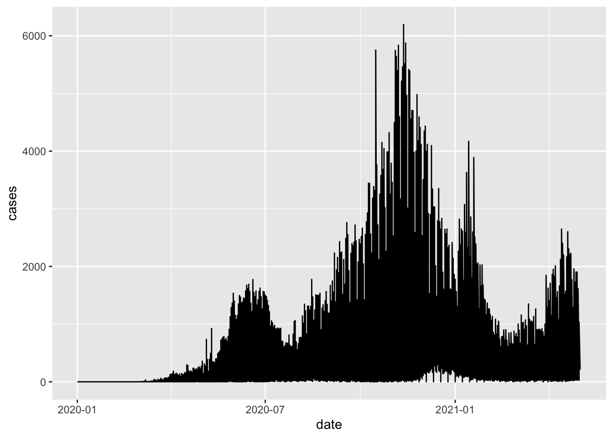
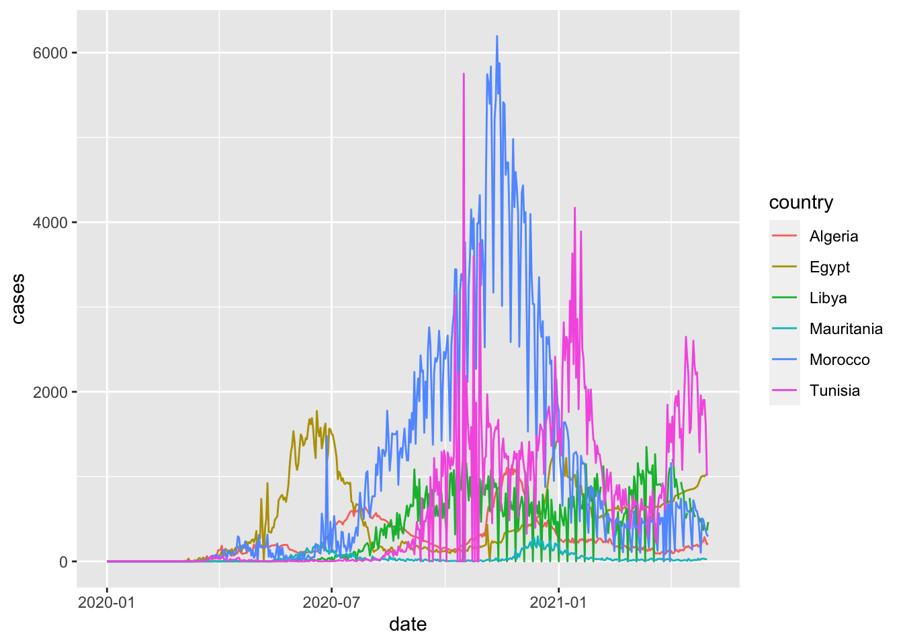
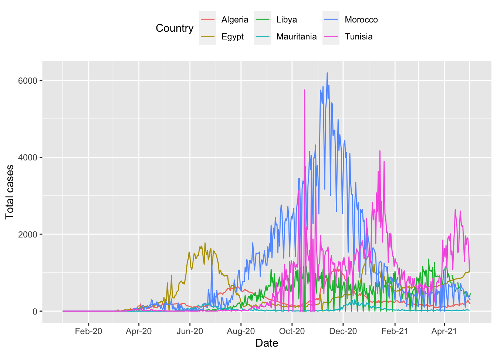
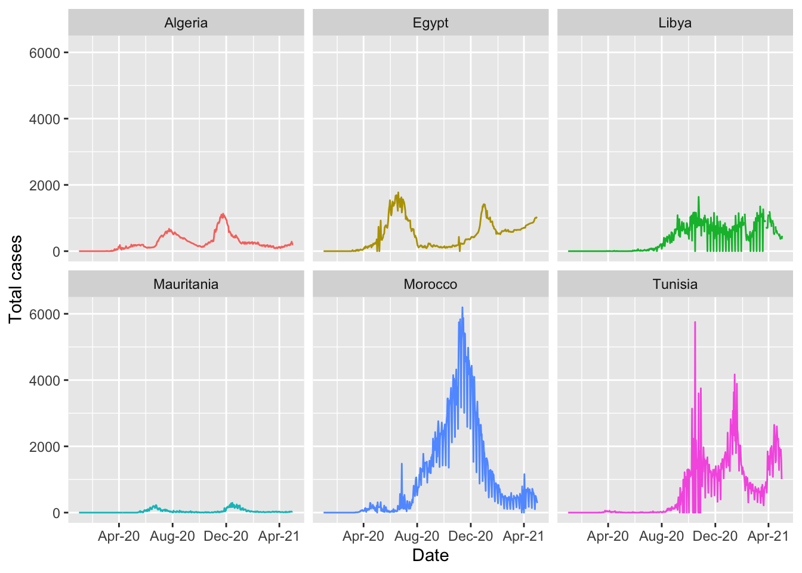
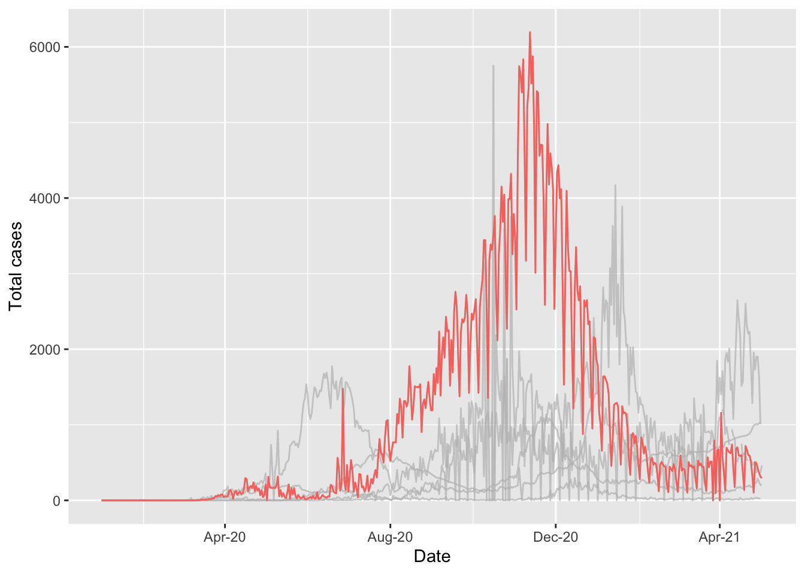
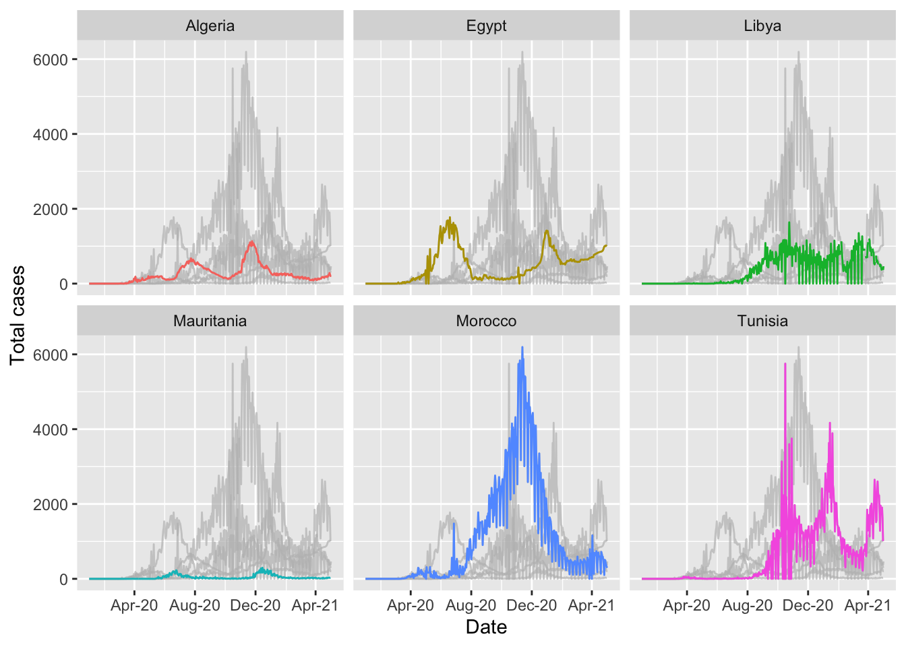
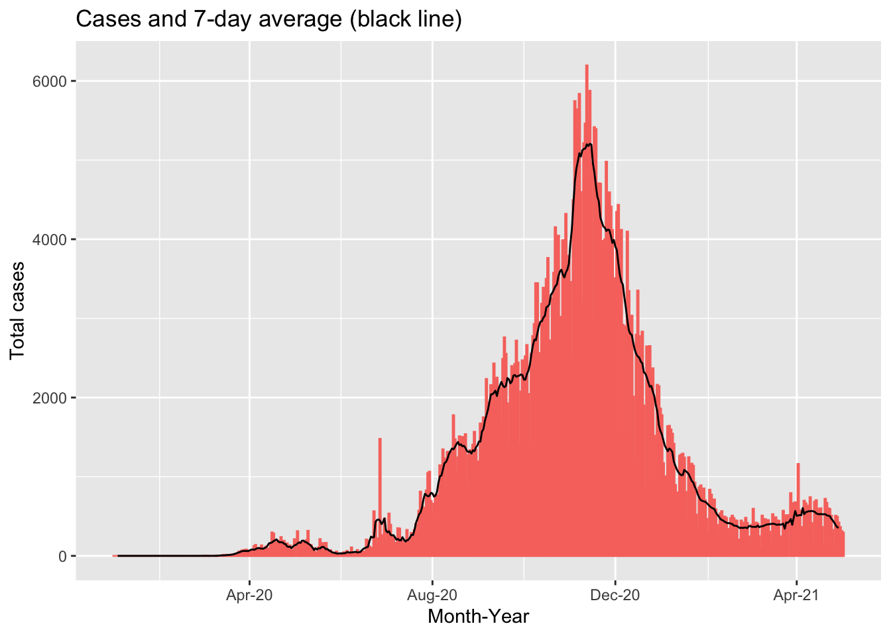

5 Session 4: Data visualisation
5.1 Presenting your results in a table
And use functions from another package to display the information in a more user-friendly table.
The gt package provides a very flexible interface for building tables from your data.
pacman::p_load(gt)The documentation describing the functions can be found here.
Below is an example using the dataset we have built.
northern_africa_cases_country_table <- northern_africa_cases_country %>%
gt() %>%
tab_header(
title = md("COVID-19 in Northern Africa")
) %>%
cols_label(
country = "Country",
total_covid_cases = "N",
percentage = "% of total cases in Northern Africa"
) %>%
tab_spanner(
label = "Confirmed cases",
columns = c(total_covid_cases,percentage)
) %>%
fmt_number(
columns = total_covid_cases,
decimals=0,
use_seps = TRUE
) %>%
cols_align(
align = "center",
columns = c(total_covid_cases, percentage)
)
northern_africa_cases_country_table| COVID-19 in Northern Africa | ||
|---|---|---|
| Country | Confirmed cases | |
| N | % of total cases in Northern Africa | |
| Morocco | 511,856 | 37.3% |
| Tunisia | 311,743 | 22.7% |
| Egypt | 228,584 | 16.7% |
| Libya | 178,335 | 13.0% |
| Algeria | 122,522 | 8.9% |
| Mauritania | 18,429 | 1.3% |
gt has many options for customising tables. To demonstrate this, we will build a table to show when each country in Africa recorded its first COVID-19 case. This example uses some of the techniques demonstrated in this article.
first_cases_africa <- africa_covid_cases_long %>%
select(date=date_format,region=AFRICAN_REGION, country=COUNTRY_NAME, cases) %>%
group_by(region,country) %>%
filter(cases>0) %>%
filter(date == min(date, na.rm=TRUE)) %>%
ungroup()
first_cases_africa_table <- first_cases_africa %>%
select(region,country,date) %>%
group_by(region) %>%
arrange(date) %>%
gt() %>%
tab_header(
title = md("When did countries in Africa record their first case of COVID-19?")
) %>%
fmt_date(
columns = date,
date_style = 4
) %>%
opt_all_caps() %>%
#Use the Chivo font
#Note the great 'google_font' function in 'gt' that removes the need to pre-load fonts
opt_table_font(
font = list(
google_font("Chivo"),
default_fonts()
)
) %>%
cols_label(
country = "Country",
date = "Date"
) %>%
cols_align(
align = "center",
columns = c(country, date)
) %>%
tab_options(
column_labels.border.top.width = px(3),
column_labels.border.top.color = "transparent",
table.border.top.color = "transparent",
table.border.bottom.color = "transparent",
data_row.padding = px(3),
source_notes.font.size = 12,
heading.align = "left",
#Adjust grouped rows to make them stand out
row_group.background.color = "grey") %>%
tab_source_note(source_note = "Data: Compiled from national governments and WHO by Humanitarian Emergency Response Africa (HERA)")
first_cases_africa_table| When did countries in Africa record their first case of COVID-19? | |
|---|---|
| Country | Date |
| Northern Africa | |
| Egypt | Friday 14 February 2020 |
| Algeria | Tuesday 25 February 2020 |
| Morocco | Monday 2 March 2020 |
| Tunisia | Monday 2 March 2020 |
| Mauritania | Friday 13 March 2020 |
| Libya | Tuesday 24 March 2020 |
| Western Africa | |
| Nigeria | Thursday 27 February 2020 |
| Senegal | Friday 28 February 2020 |
| Togo | Friday 6 March 2020 |
| Burkina Faso | Monday 9 March 2020 |
| Cote d'Ivoire | Wednesday 11 March 2020 |
| Ghana | Thursday 12 March 2020 |
| Guinea | Thursday 12 March 2020 |
| Benin | Monday 16 March 2020 |
| Gambia | Monday 16 March 2020 |
| Liberia | Monday 16 March 2020 |
| Niger | Thursday 19 March 2020 |
| Guinea-Bissau | Wednesday 25 March 2020 |
| Mali | Wednesday 25 March 2020 |
| Sierra Leone | Tuesday 31 March 2020 |
| Southern Africa | |
| South Africa | Thursday 5 March 2020 |
| Eswatini | Saturday 14 March 2020 |
| Namibia | Saturday 14 March 2020 |
| Zimbabwe | Friday 20 March 2020 |
| Angola | Saturday 21 March 2020 |
| Zambia | Sunday 22 March 2020 |
| Mozambique | Monday 23 March 2020 |
| Botswana | Monday 30 March 2020 |
| Malawi | Thursday 2 April 2020 |
| Lesotho | Tuesday 12 May 2020 |
| Central Africa | |
| Cameroon | Friday 6 March 2020 |
| Democratic Republic of the Congo | Tuesday 10 March 2020 |
| Gabon | Thursday 12 March 2020 |
| Central African Republic | Saturday 14 March 2020 |
| Equatorial Guinea | Saturday 14 March 2020 |
| Chad | Thursday 19 March 2020 |
| Congo | Sunday 22 March 2020 |
| Burundi | Tuesday 31 March 2020 |
| Sao Tome and Principe | Monday 6 April 2020 |
| Eastern Africa | |
| Ethiopia | Friday 13 March 2020 |
| Kenya | Friday 13 March 2020 |
| Sudan | Friday 13 March 2020 |
| Rwanda | Saturday 14 March 2020 |
| Somalia | Monday 16 March 2020 |
| Mayotte | Tuesday 17 March 2020 |
| Tanzania | Tuesday 17 March 2020 |
| Djibouti | Wednesday 18 March 2020 |
| Mauritius | Wednesday 18 March 2020 |
| Madagascar | Friday 20 March 2020 |
| Eritrea | Saturday 21 March 2020 |
| Uganda | Saturday 21 March 2020 |
| South Sudan | Monday 6 April 2020 |
| Comoros | Thursday 30 April 2020 |
| Data: Compiled from national governments and WHO by Humanitarian Emergency Response Africa (HERA) | |
5.2 Visualising data using ggplot
One of the major strengths of R is visualising data. There are many packages which have functions you can use to make graphs, tables, maps…the list is endless!
The first package of functions we will use for visualising data is another core tidyverse package called ggplot2. This is commonly referred to as ggplot
We have already loaded the package when we ran library(tidyverse)
You can also choose to only load the ggplot2 package by typing library(ggplot2)
library(ggplot2)The Epidemiologist R handbook has 2 sections focused on ggplot
These sections contain very helpful explanations of many of the functions available with ggplot. There are also a number of excellent references for every type of graph you want to make.
We will walk through some common examples to teach some of the most common approaches
5.2.1 Epicurves
Firstly, we will produce epicurves to describe the distribution of COVID-19 cases (y axis) over time (x axis).
Make a graph of confirmed COVID-19 cases in Northern Africa
ggplot(northern_africa, aes(x=date,y=cases)) +
geom_line()## Warning: Removed 7 row(s) containing missing values (geom_path).
This command has generated a line graph of confirmed COVID-19 cases for countries in Northern Africa.
From earlier steps, we know that the dataset northern_africa contains data from multiple countries: `r unique(northern_africa$country’
We can add more information to the ggplot command to draw separate lines for each country
ggplot(northern_africa, aes(x=date,y=cases, color=country)) +
geom_line()## Warning: Removed 9 row(s) containing missing values (geom_path).
To make the graph more presentable, we can add more options to the ggplot command
ggplot(northern_africa, aes(x=date,y=cases, color=country)) +
geom_line() +
labs(x='Date', y='Total cases', color='Country') + #label axes
theme(legend.position='top') + #place legend at top of graph
scale_x_date(date_breaks = '2 months', #set x axis to have 2 month breaks
date_minor_breaks = '1 month', #set x axis to have 1 month breaks
date_labels = '%b-%y') #change label for x axis## Warning: Removed 9 row(s) containing missing values (geom_path).
More information on plotting time-series data using ggplot can be found here.
It is still difficult to see the data for each country. There is a helpful command called facet_wrap to fix this and allow us to show multiple epicurves by country.
ggplot(northern_africa, aes(x=date,y=cases, color=country)) +
geom_line() +
labs(x='Date', y='Total cases') + #label axes
theme(legend.position='none') + #remove legend by setting position to 'none'
scale_x_date(date_breaks = '4 months', #set x axis to have 2 month breaks
date_minor_breaks = '2 months', #set x axis to have 1 month breaks
date_labels = '%b-%y') + #change label for x axis
facet_wrap(~country) # this will create a separate graph for each country## Warning: Removed 9 row(s) containing missing values (geom_path).
5.2.1.1 Highlighting
When data are presented for multiple countries, it can be helpful to highlight specific countries to show their path. This can be easily done in ggplot using the package gghighlight. This is covered in the Epidemiologist R handbook Section 31.8 Highlighting
pacman::p_load(gghighlight)
highlight_country_morocco_gph <- ggplot(northern_africa, aes(x=date,y=cases, color=country)) +
geom_line() +
gghighlight::gghighlight(country == "Morocco") + #highlight data reported by Algeria
labs(x='Date', y='Total cases') + #label axes
theme(legend.position='none') + #remove legend by setting position to 'none'
scale_x_date(date_breaks = '4 months', #set x axis to have 2 month breaks
date_minor_breaks = '2 months', #set x axis to have 1 month breaks
date_labels = '%b-%y') #change label for x axis## Warning: Tried to calculate with group_by(), but the calculation failed.
## Falling back to ungrouped filter operation...## label_key: country highlight_country_morocco_gph## Warning: Removed 9 row(s) containing missing values (geom_path).## Warning: Removed 1 row(s) containing missing values (geom_path).## Warning: Removed 1 rows containing missing values (geom_label_repel).
Highlighting can also be applied to graphs with the facet_wrap function applied.
highlight_country_facet_gph <- ggplot(northern_africa, aes(x=date,y=cases, color=country)) +
geom_line() +
labs(x='Date', y='Total cases') + #label axes
gghighlight::gghighlight() + #highlight each country independently
theme(legend.position='none') + #remove legend by setting position to 'none'
scale_x_date(date_breaks = '4 months', #set x axis to have 2 month breaks
date_minor_breaks = '2 months', #set x axis to have 1 month breaks
date_labels = '%b-%y') + #change label for x axis
facet_wrap(~country) # this will create a separate graph for each country## label_key: countryhighlight_country_facet_gph## Warning: Removed 9 row(s) containing missing values (geom_path).
## Warning: Removed 9 row(s) containing missing values (geom_path).## Warning: Removed 6 rows containing missing values (geom_label_repel).
5.2.2 Building your confidence
This code can seem overwhelming at first. The method to build a ggplot is very different to the ‘point and click’ method used in Excel. It will be very helpful to your learning to work through each step and see what changes when you delete/add code.
There is a very helpful package called eqsuisse which can help you to understand more about how ggplot works.
pacman::p_load(esquisse)
esquisse::esquisser()Using this package you can drag and drop variables, change the type of graph and make a lot customisations. You can also click the button “code” and it will show you what the ggplot code is for each graph you have selected. This code can then be copied into your R script.
5.2.3 Picking the right graph
With so many options to choose from you will find yourself spending a lot of time trying to work out the most effective visualisation for your analysis. Graphs are a very powerful method for visualising complex information but they can be misleading if they are not designed correctly.
5.2.3.1 Tufte’s 6 fundamental principles of design
Edward Tufte is a world-famous graphic designer who has published several books focusing on data visualisation. Tufte has suggeseted 6 fundamental principles of design which have been discussed here and here. We will work through the 6 example and consider how we can take them into account when building graphs in ggplot.
“The representation of numbers, as physically measured on the surface of the graphic itself, should be directly proportional to the numerical quantities measured.”

Use an accurate scale
“Clear, detailed, and thorough labeling should be used to defeat graphical distortion and ambiguity. Write out explanations of the data on the graphic itself. Label important events in the data.”

Label the graph so that the reader understands the story you are telling.
“Show data variation, not design variation.”
Pick colours that can help to tell the story. Don’t have more than 5 colours as it’s difficult to identify individual groups. Use the most commonly used types of graph.
“In time-series displays of money, deflated and standardized units of monetary measurement are nearly always better than nominal units.”
Use appropriate units to ensure data are comparable. For diseases, consider presenting incidence as cases/100,000 people.
“The number of information-carrying (variable) dimensions depicted should not exceed the number of dimensions in the data.”

Don’t use pie charts!
“Graphics must not quote data out of context.”
Ensure your graph is telling the truth!
Due to the structure of code using ggplot these principles can be followed to ensure clean, clear graphics.
5.2.4 Visualising the moving average
In a previous section, we added indicators for the rolling average and rolling sum of cases. These indicators can be helpful for identifying trends over time.
moroocco_covid_cases_graph <- morocco_covid_cases_mean %>%
ggplot() +
geom_col(aes(x=date, y=cases, color=country)) +
geom_line(aes(x=date, y=cases_7day_mean)) +
labs(x='Month-Year',
y='Total cases',
title='Cases and 7-day average (black line)') +
theme(legend.position='none') +
scale_x_date(date_breaks = '4 months', #set x axis to have 2 month breaks
date_minor_breaks = '2 months', #set x axis to have 1 month breaks
date_labels = '%b-%y') #change label for x axis
moroocco_covid_cases_graph## Warning: Removed 1 rows containing missing values (position_stack).## Warning: Removed 7 row(s) containing missing values (geom_path).
This chart shows the total number of COVID-19 cases for each day in Morocco between January 1, 2020 and May 3, 2021. The red bars show the reported case numbers for each day while the black line show the 7-day average of cases. We can see that there are several dates with substantially higher numbers of cases compared to the neighbouring dates. This could be due to increased testing on specific days but it is more likely due to delays in reporting leading to a backlog of cases reported on specific days. The black line “smooths” out these differences, allowing us to see the overall trend.
5.2.5 Combining plots
In this section we have created several graphs. We can combine some of these graphs to increase the impact and tell a rich, accurate story using data.
For example, we have created two graphs focusing on data from Morocco - morocco_covid_cases_gph and highlight_country_morocco_gph. There is a package called patchwork which has been designed to combine graphs made using ggplot.
pacman::p_load(patchwork)More information on combining graphs can be found in the Epidemiologist R handbook Section 31.9: Combine plots